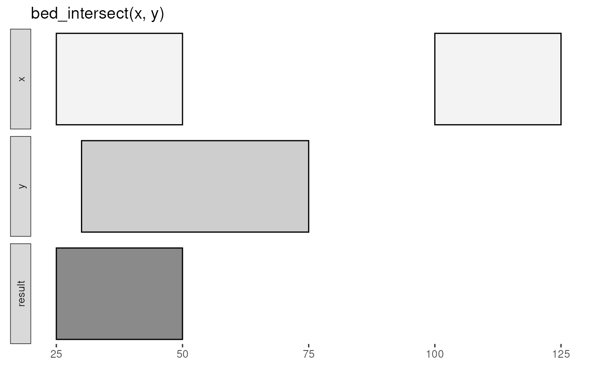
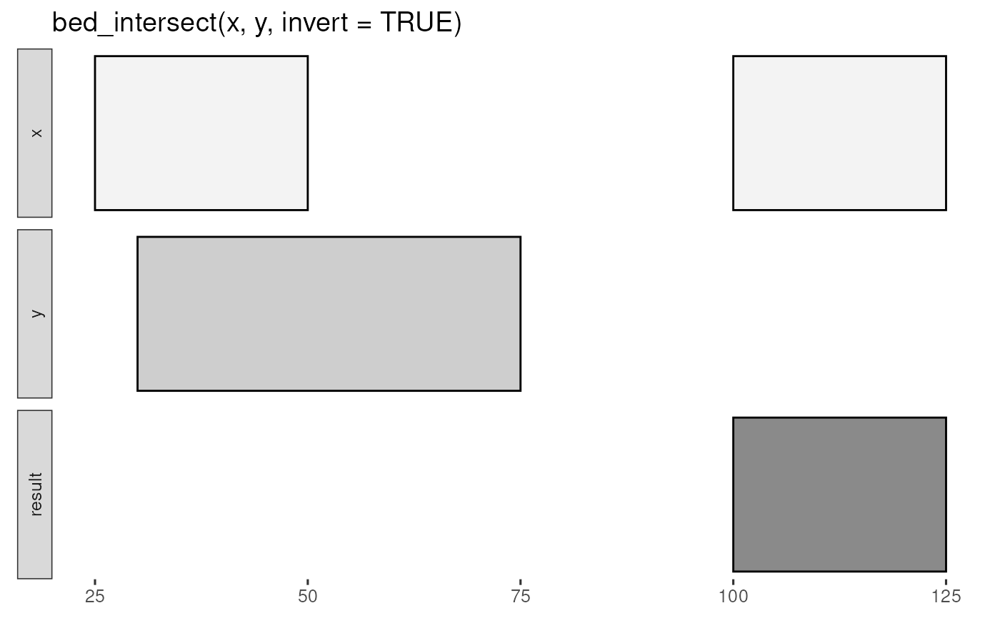

Report intersecting intervals from x and y tbls. Book-ended intervals
have .overlap values of 0 in the output.
bed_intersect(x, ..., invert = FALSE, suffix = c(".x", ".y"))
| x | |
|---|---|
| ... | one or more (e.g. a list of) |
| invert | report |
| suffix | colname suffixes in output |
tbl_interval() with original columns from x and y suffixed with .x
and .y, and a new .overlap column with the extent of overlap for the
intersecting intervals.
If multiple y tbls are supplied, the .source contains variable names
associated with each interval. All original columns from the y are suffixed
with .y in the output.
If ... contains named inputs (i.e a = y, b = z or list(a = y, b = z)),
then .source will contain supplied names (see examples).
input tbls are grouped by chrom by default, and additional
groups can be added using dplyr::group_by(). For example,
grouping by strand will constrain analyses to the same strand. To
compare opposing strands across two tbls, strands on the y tbl can
first be inverted using flip_strands().
http://bedtools.readthedocs.org/en/latest/content/tools/intersect.html
Other multiple set operations: bed_closest,
bed_coverage, bed_map,
bed_subtract, bed_window
x <- trbl_interval( ~chrom, ~start, ~end, 'chr1', 25, 50, 'chr1', 100, 125 ) y <- trbl_interval( ~chrom, ~start, ~end, 'chr1', 30, 75 ) bed_glyph(bed_intersect(x, y))x <- trbl_interval( ~chrom, ~start, ~end, 'chr1', 100, 500, 'chr2', 200, 400, 'chr2', 300, 500, 'chr2', 800, 900 ) y <- trbl_interval( ~chrom, ~start, ~end, ~value, 'chr1', 150, 400, 100, 'chr1', 500, 550, 100, 'chr2', 230, 430, 200, 'chr2', 350, 430, 300 ) bed_intersect(x, y)#> # A tibble: 6 x 7 #> chrom start.x end.x start.y end.y value.y .overlap #> <chr> <dbl> <dbl> <dbl> <dbl> <dbl> <int> #> 1 chr1 100 500 150 400 100 250 #> 2 chr1 100 500 500 550 100 0 #> 3 chr2 200 400 230 430 200 170 #> 4 chr2 200 400 350 430 300 50 #> 5 chr2 300 500 230 430 200 130 #> 6 chr2 300 500 350 430 300 80bed_intersect(x, y, invert = TRUE)#> # A tibble: 1 x 3 #> chrom start end #> <chr> <dbl> <dbl> #> 1 chr2 800 900# start and end of each overlapping interval res <- bed_intersect(x, y) dplyr::mutate(res, start = pmax(start.x, start.y), end = pmin(end.x, end.y))#> # A tibble: 6 x 9 #> chrom start.x end.x start.y end.y value.y .overlap start end #> <chr> <dbl> <dbl> <dbl> <dbl> <dbl> <int> <dbl> <dbl> #> 1 chr1 100 500 150 400 100 250 150 400 #> 2 chr1 100 500 500 550 100 0 500 500 #> 3 chr2 200 400 230 430 200 170 230 400 #> 4 chr2 200 400 350 430 300 50 350 400 #> 5 chr2 300 500 230 430 200 130 300 430 #> 6 chr2 300 500 350 430 300 80 350 430z <- trbl_interval( ~chrom, ~start, ~end, ~value, 'chr1', 150, 400, 100, 'chr1', 500, 550, 100, 'chr2', 230, 430, 200, 'chr2', 750, 900, 400 ) bed_intersect(x, y, z)#> # A tibble: 11 x 8 #> chrom start.x end.x start.y end.y value.y .source .overlap #> <chr> <dbl> <dbl> <dbl> <dbl> <dbl> <chr> <int> #> 1 chr1 100 500 150 400 100 y 250 #> 2 chr1 100 500 150 400 100 z 250 #> 3 chr1 100 500 500 550 100 y 0 #> 4 chr1 100 500 500 550 100 z 0 #> 5 chr2 200 400 230 430 200 y 170 #> 6 chr2 200 400 230 430 200 z 170 #> 7 chr2 200 400 350 430 300 y 50 #> 8 chr2 300 500 230 430 200 y 130 #> 9 chr2 300 500 230 430 200 z 130 #> 10 chr2 300 500 350 430 300 y 80 #> 11 chr2 800 900 750 900 400 z 100bed_intersect(x, exons = y, introns = z)#> # A tibble: 11 x 8 #> chrom start.x end.x start.y end.y value.y .source .overlap #> <chr> <dbl> <dbl> <dbl> <dbl> <dbl> <chr> <int> #> 1 chr1 100 500 150 400 100 exons 250 #> 2 chr1 100 500 150 400 100 introns 250 #> 3 chr1 100 500 500 550 100 exons 0 #> 4 chr1 100 500 500 550 100 introns 0 #> 5 chr2 200 400 230 430 200 exons 170 #> 6 chr2 200 400 230 430 200 introns 170 #> 7 chr2 200 400 350 430 300 exons 50 #> 8 chr2 300 500 230 430 200 exons 130 #> 9 chr2 300 500 230 430 200 introns 130 #> 10 chr2 300 500 350 430 300 exons 80 #> 11 chr2 800 900 750 900 400 introns 100#> # A tibble: 11 x 8 #> chrom start.x end.x start.y end.y value.y .source .overlap #> <chr> <dbl> <dbl> <dbl> <dbl> <dbl> <chr> <int> #> 1 chr1 100 500 150 400 100 exons 250 #> 2 chr1 100 500 150 400 100 introns 250 #> 3 chr1 100 500 500 550 100 exons 0 #> 4 chr1 100 500 500 550 100 introns 0 #> 5 chr2 200 400 230 430 200 exons 170 #> 6 chr2 200 400 230 430 200 introns 170 #> 7 chr2 200 400 350 430 300 exons 50 #> 8 chr2 300 500 230 430 200 exons 130 #> 9 chr2 300 500 230 430 200 introns 130 #> 10 chr2 300 500 350 430 300 exons 80 #> 11 chr2 800 900 750 900 400 introns 100